The morning it opens on what changed.
First open of the day: 2 new insights · 5 due · 0 blocked since your last visit — and a pick-up-where-you-left-off button that lands on the last node you touched.

⌘K — "what's due."
The palette answers questions from the graph — due, blocked, changed, needs review — as dated items, not search hits. Anything else falls through to search.
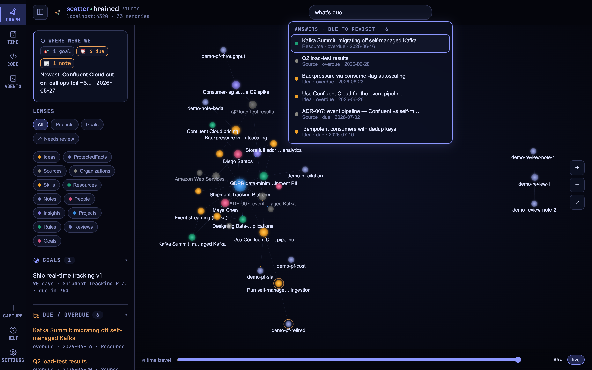
The agenda the graph keeps.
Overdue, today, upcoming, worth revisiting — built from dates you put on nodes, with a clickable mini-month and a created-per-day sparkline in the margin.
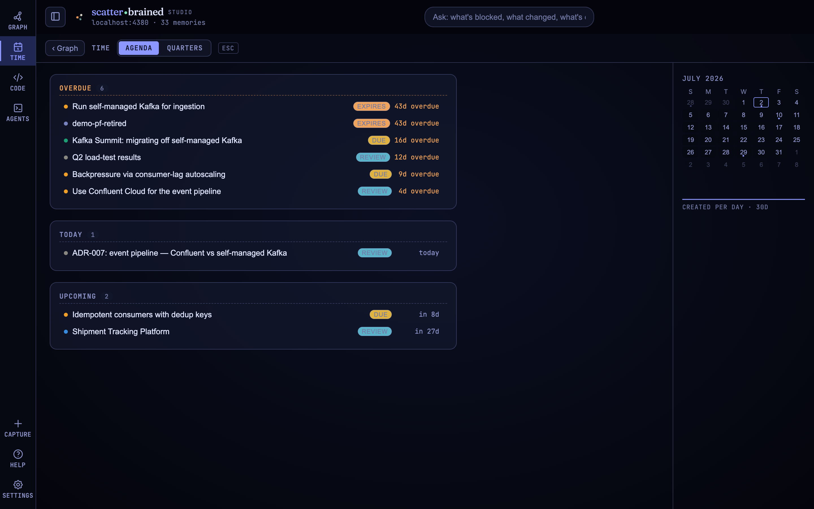
The same graph, at planning distance.
Goals and milestones on quarter swimlanes — a roadmap read straight from the graph's intention dates, not a second tool to keep in sync.
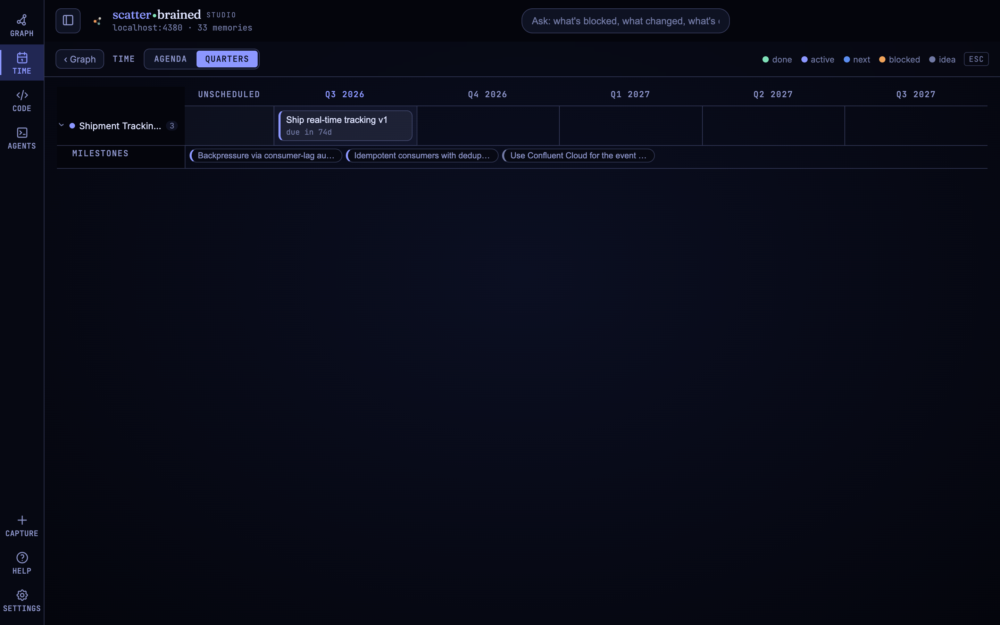
Focus, and the noise steps back.
Focus any node and everything unrelated fades — the thread from a conference talk to the skill it teaches to the project that needs it stays lit.
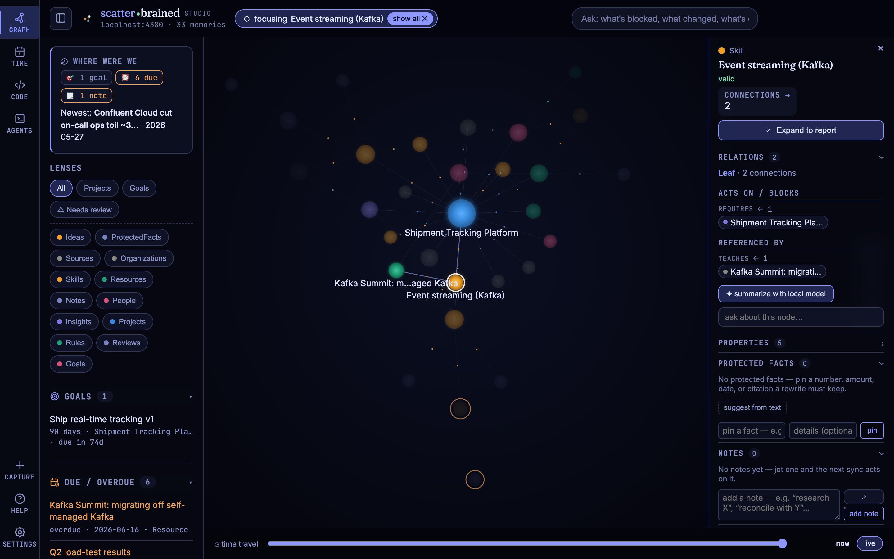
Every claim, wearing its receipts.
Click a node and the inspector composes itself from what the node is — its sources, relations, history, progress — so provenance is the default view, not a tab.

A decision, superseded — not erased.
Created → valid until → superseded by → reason. The old belief stays walkable, the successor is one click away, and "why did we change course?" has an answer on the record.

The number a rewrite can't quietly change.
$2,400/mo is pinned. A rewrite tried to make it $3,100 — so the change is held for approve / reject instead of slipping through, with history kept either way.

The file opens where the claim lives.
A decision cites an ADR; the ADR opens rendered, in place, on its node — no detour through a file manager. A benchmark cites a CSV; it opens as a sortable table with a chart view. Every viewer takes anchored notes, so your margin comments land in the graph too.
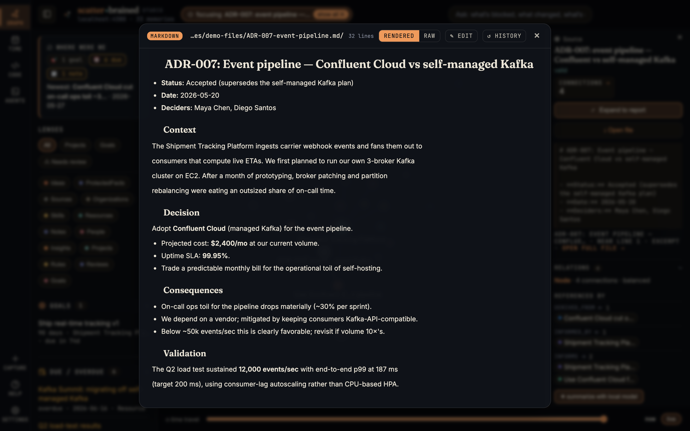
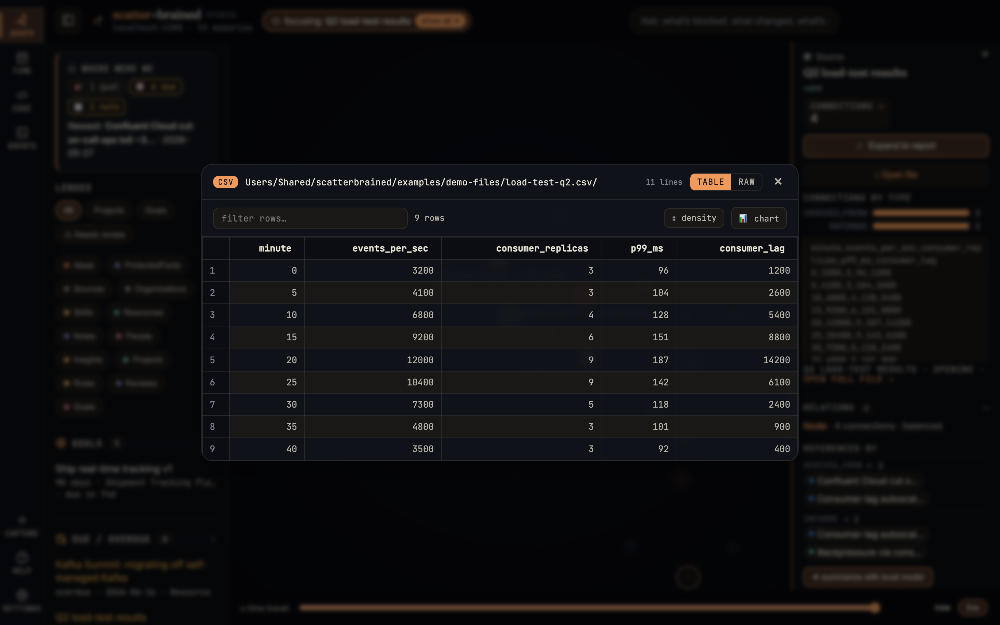
Understand a repo's structure before you touch it.
The Code lens maps any granted folder: ranked hubs to read first, unreferenced modules, import cycles — and for any file, an impact diagram of who calls it, function by function, and what it pulls in. The same map briefs a launched agent, so what you see is what it gets.
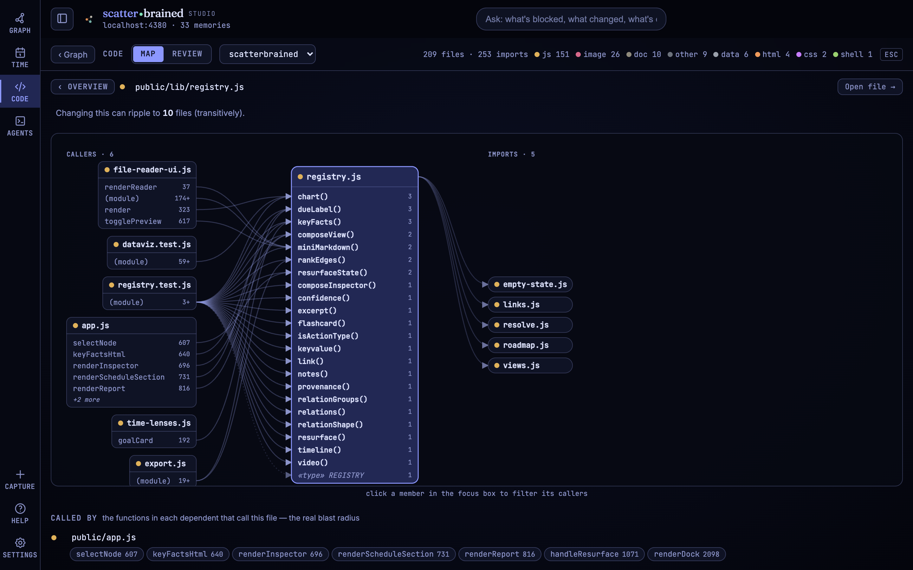
the map above is this project's own public repo — changing registry.js ripples to ten files, and the diagram names the exact functions that would feel it.
The review is a node, not a tab.
Grant a folder and its git history becomes reviewable: a file tree of what changed, the code frozen at a commit, and every line comment saved as a graph note pinned to that repo at that sha — connected to what it was about. Whatever still needs a human collects in one queue.
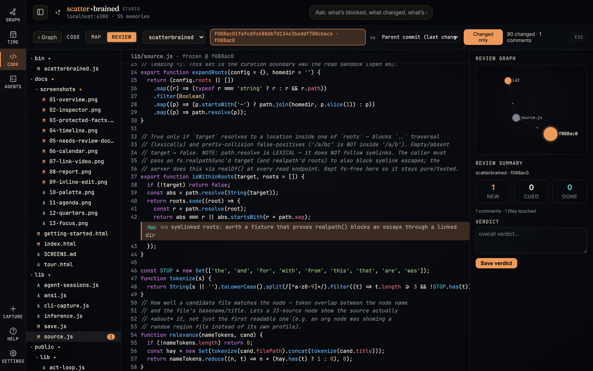

six weeks later the review is still one hop from the decision it questioned — and the unresolved rows wait in the needs-review queue below.
Drop a link; it lands as a glowing dot.
Paste a URL and it becomes a connected source — a talk renders as a playable card on its node. Agent-session captures get the same receipt: a toast, then the camera flies to the new node.

The local runtime, in the box.
Slipway is the local-model runtime bundled with Scatterbrained — it starts alongside the Studio. A control panel for running agent CLIs against local models: pick anything in your HuggingFace cache (MLX) or Ollama, start and stop it, and launch Claude Code, OpenCode, or a plain shell against it. No key, no cloud required.
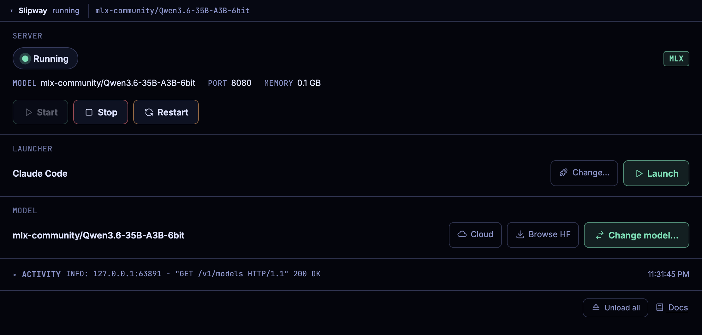
honest: it ships with no model and loads none until you pull one (macOS; MLX needs
Apple silicon, Ollama runs anywhere) — every other beat on this page works without one, and
SLIPWAY_AUTOSTART=0 keeps the runtime from starting at all.
A real terminal, where the graph lives.
Slipway embeds real terminal sessions — an agent CLI or a plain shell — and the
Studio can talk back: here npx scatterbrained status reads the running graph from
inside the session that's about to work on it.
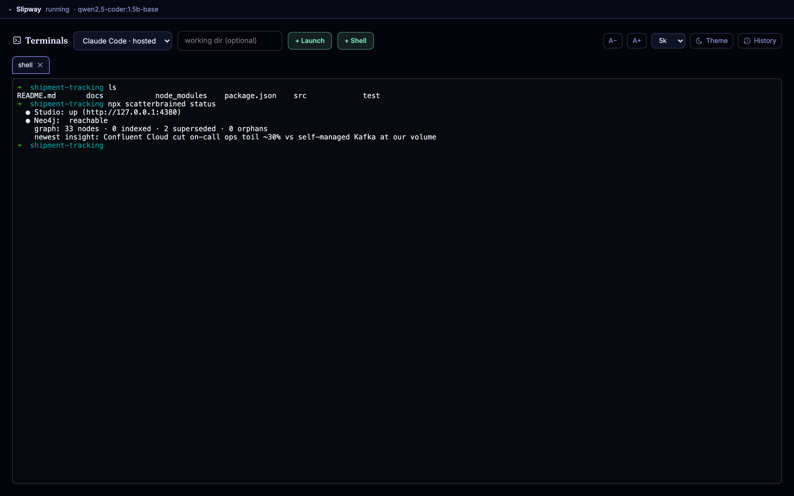
Brief → Session → Capture → Insight.
When Slipway is running, the Agents lens closes the loop: the session rail keeps every run (live and past), the loop header shows where each one stands, and an ended session can be captured back into the graph as a source with a receipt.
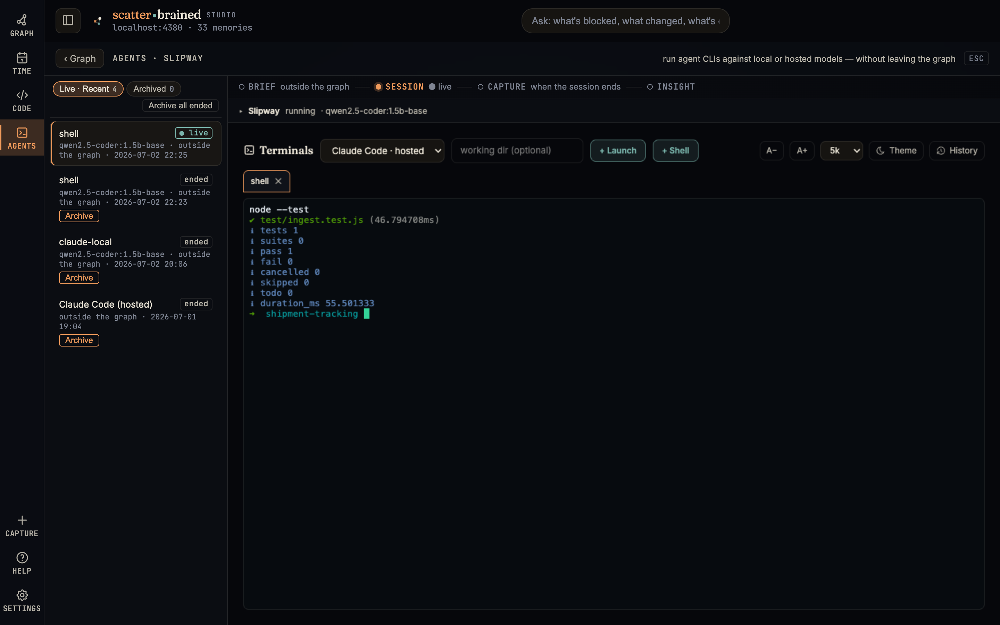
honest: feature-detected — with the runtime turned off there's no Agents lens, and capture still works from the CLI and the Studio alone.